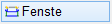

")
")
Sie können in Grundrissen sehr schnell und einfach Öffnungen in Wänden zeichnen. Der Vorteil gegenüber den Funktionen [Konst1 | Kopier] und [Konst2 | Dupliz] besteht in der Möglichkeit, bei jeder Öffnung eine andere Öffnungsbreite eingeben zu können.
|
Hinweis: |
|
Beachten Sie, dass eine evtl. vorhandene Schraffur oder Füllung nicht gelöscht oder unterbrochen wird. Sie können diese Funktion an beliebigen, parallelen Linien anwenden. Es ist nicht nötig, [Konst2 | Wandum] oder [Konst2 | WandZe] zu verwenden. |

Funktionen zum Einfügen von Fenstern und Türen
·Assistent - Erzeugen einer Öffnung unter Angabe der Wandstärke, eines Anschlags und anderer Parameter.
·Fenster neu - Erstellen und Einfügen einer Öffnung "Fenstermakro" aus einer Datei. Öffnet den Dialog Fenster lesen_Zeichnung mit Fenster einlesen.